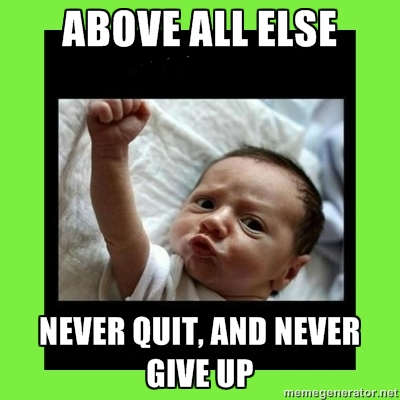

Guide du voyageur en terre simplonienne


Comment travailler à Simplon
Qui est ce fameux esprit Simplon ?


Vous aller manger de l'écran
Tous les jours !
8h par jour !


Formation intense : qui pourri vos yeux, vous porterez des lunettes un jour où l'autre !


Skills, not diplomas
but tons of work to achieve


Vous travaillerez en équipe à réaliser un projet interne ou professionnel.
Mais dans 2 mois environ

Learning by doing


Une évolution par pallier
Auto-évaluation pendant entretiens individuels


Ceux déjà au pallier 2 devront aider (aka recruter dans leur groupe), ceux qui n'ont pas encore passé ce pallier.


3 cursus :


Beaucoup de gens veulent apprendre le développement logiciel, mais ce n'est pas pour tout le monde.

Soyez employable à la fin de la formation, mais le chemin est très long avant de devenir développeur
 Teach Yourself Programming in Ten Years
Teach Yourself Programming in Ten Years 
by Peter Norvig


Cycle du developpeur :


La classe inversée

La journée


Le soir


Read the Fucking Manual


9h à 18h (avec facilitateur disponible)
ex. Pair programming :
L'équipe définie aléatoirement le matin, en priorisant de légères différences de niveau quand aux objectifs de la session.
Discussion des objectifs de la pair avec le formateur avant de commencer pendant 5min
matin : 10h-12h aprem : 14h-16h
ex. Session de dojos
généralement en demi-journée, une fois toutes les semaines env (principalement)


L'équipe de formation va être sur les rotules pour répondre à toutes vos questions : ménagez-les !

Vincent "T'as demandé à Jean avant de me poser cette question ? Comment çà non ?"


Un environnement pour vous focaliser sur votre code

Pas d'obstacle, de famille, d'enfants


Notre objectif : oubliez vos peurs

Syndrome de l'imposteur

Essayez de comprendre comment votre code fonctionne
Comprennez comment votre outils de travail fonctionnent
Allez en profondeur, ne pas se contenter de grater la surface jusqu'a ce que ca marche
L'équipe vous a choisie parcequ'on croit en vous
Et nous aussi, on essaie de s'améliorer !
On sait tous que nous n'y sommes pas encore
Augmenter vos capacités de programamtion mais aussi votre capacité à apprendre
Ecrivez votre blog pour cristalliser vos concepts
Demander des code review, du feedback des astuces autour de vous.

Des questions ?